學員心得
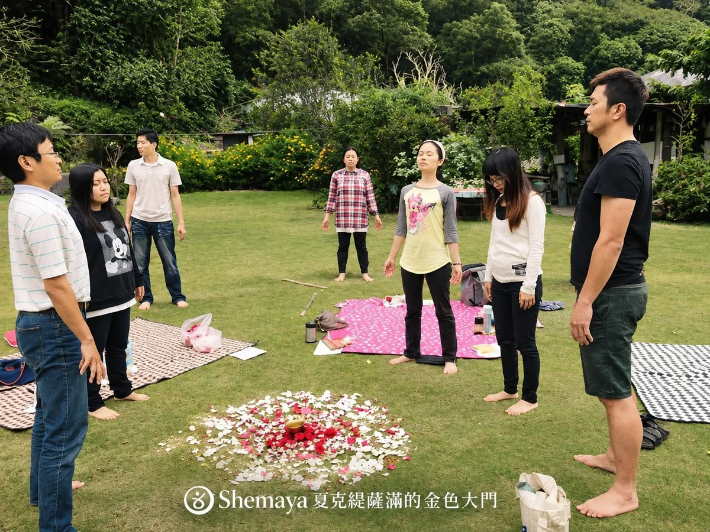
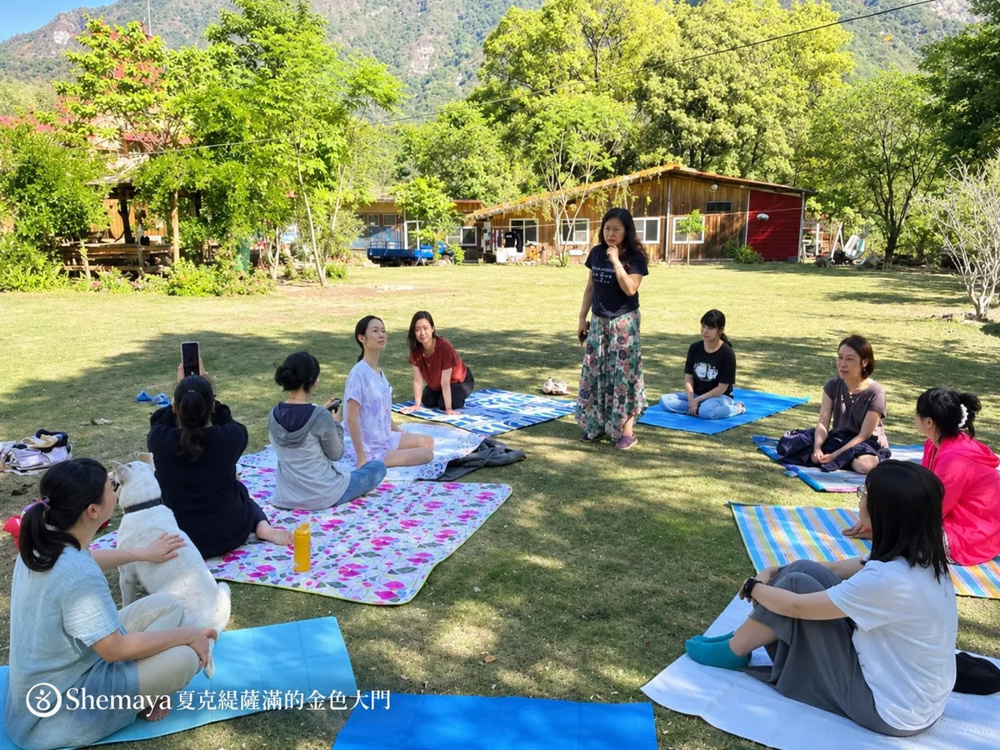
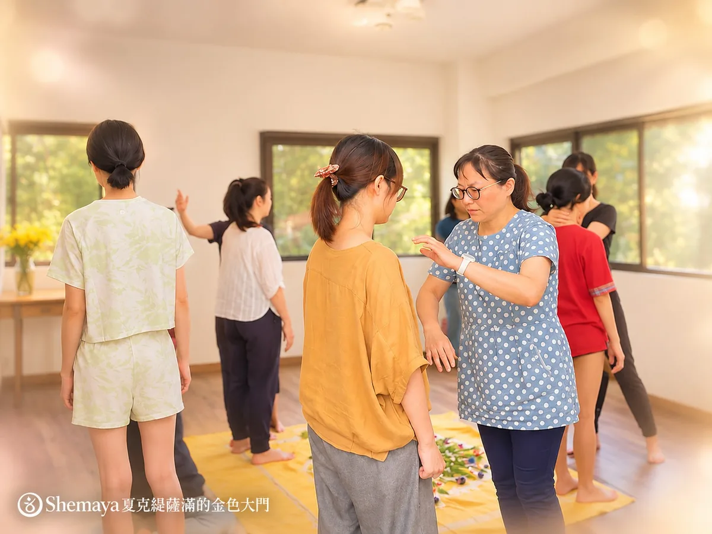
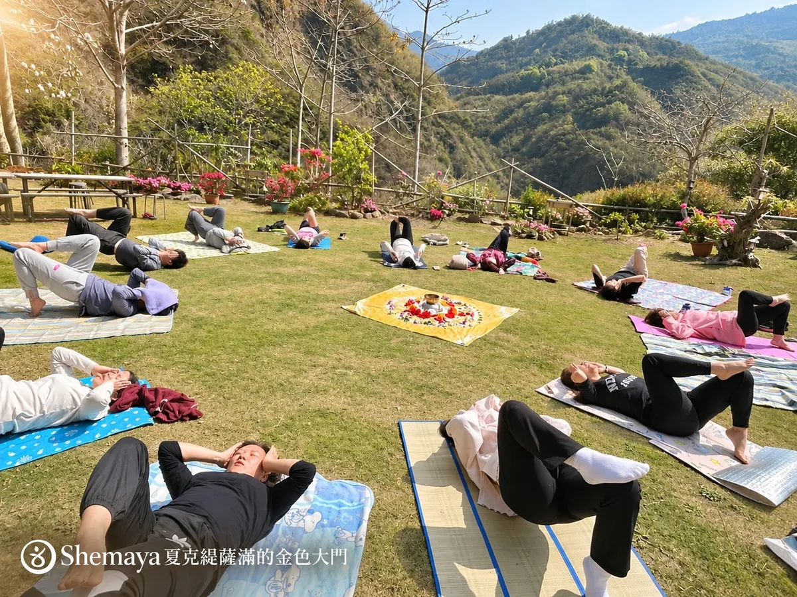
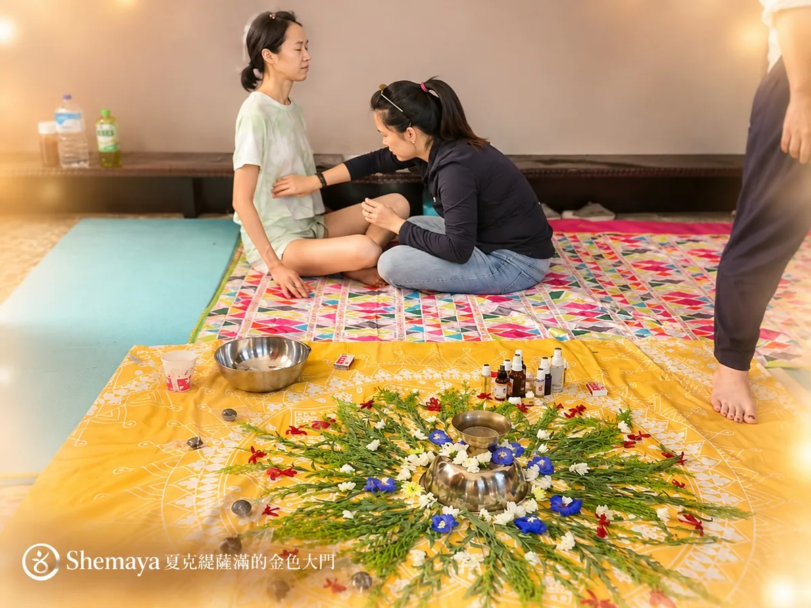
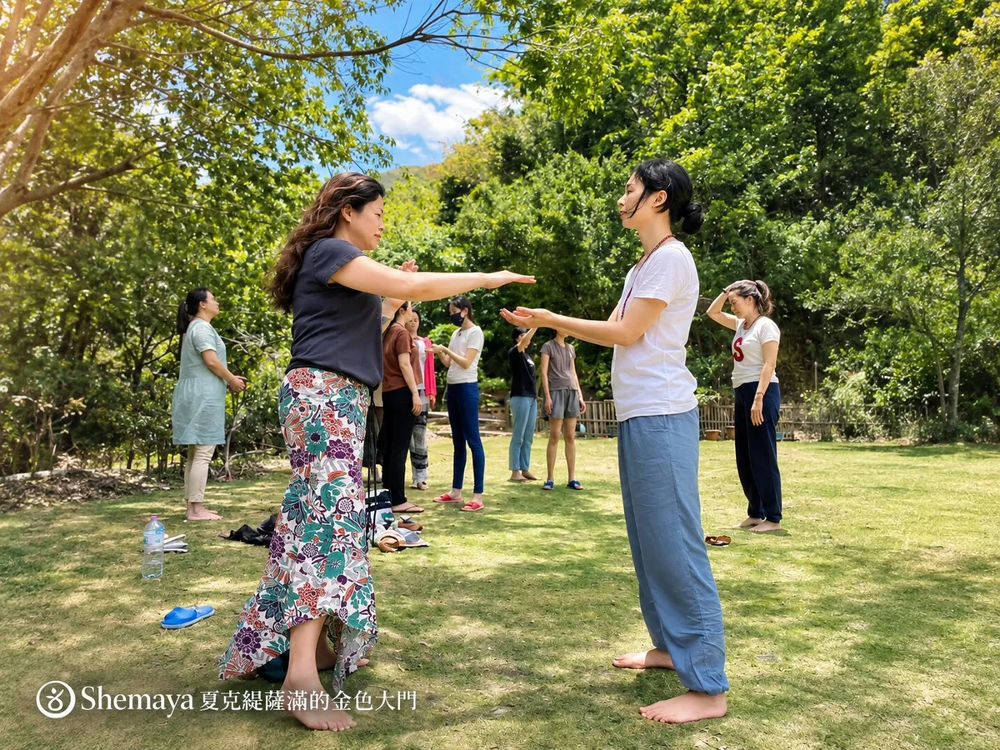
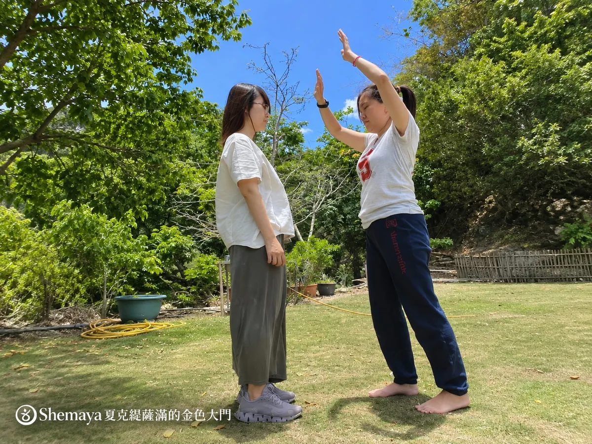
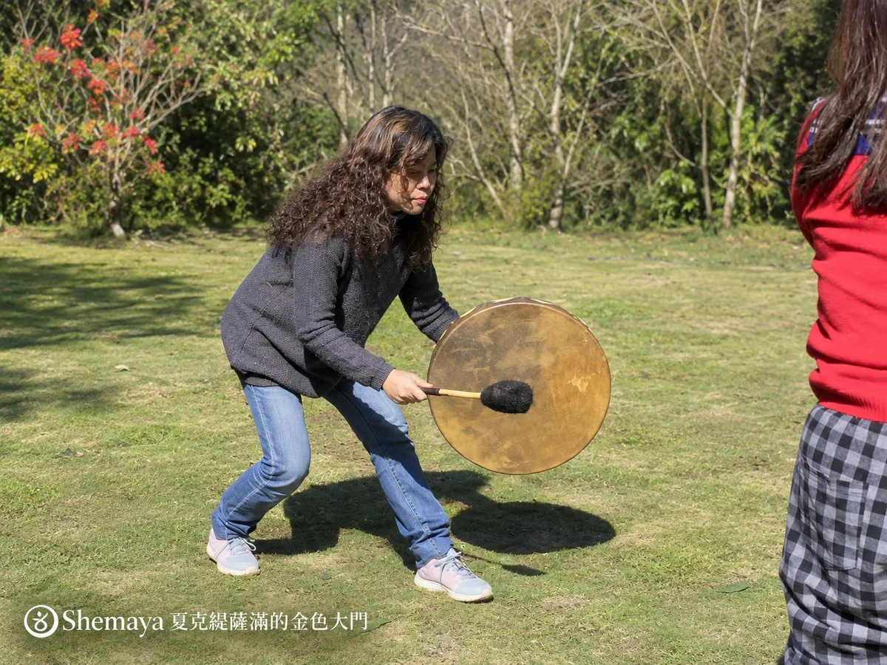
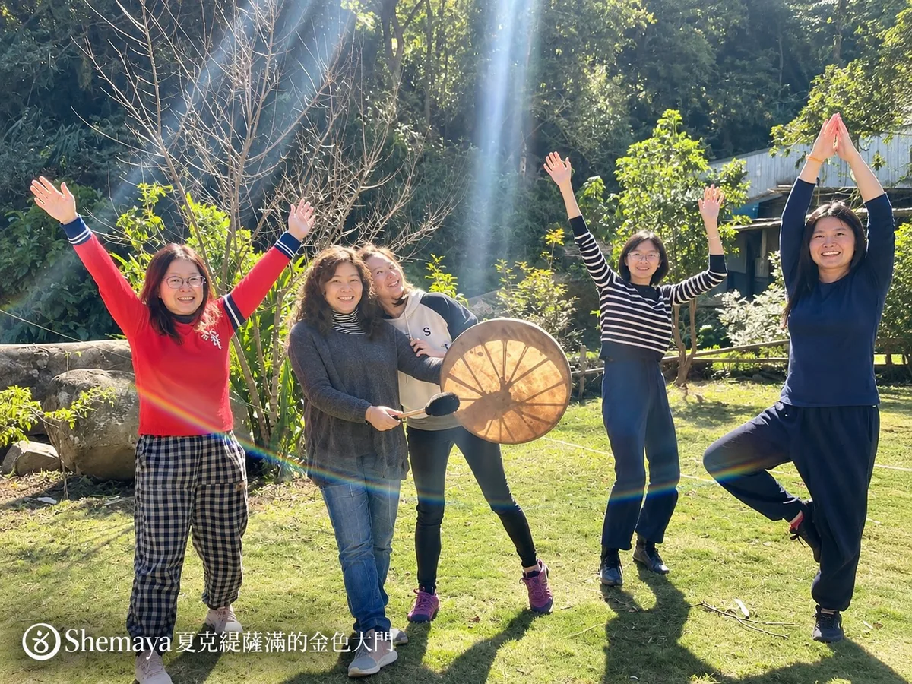
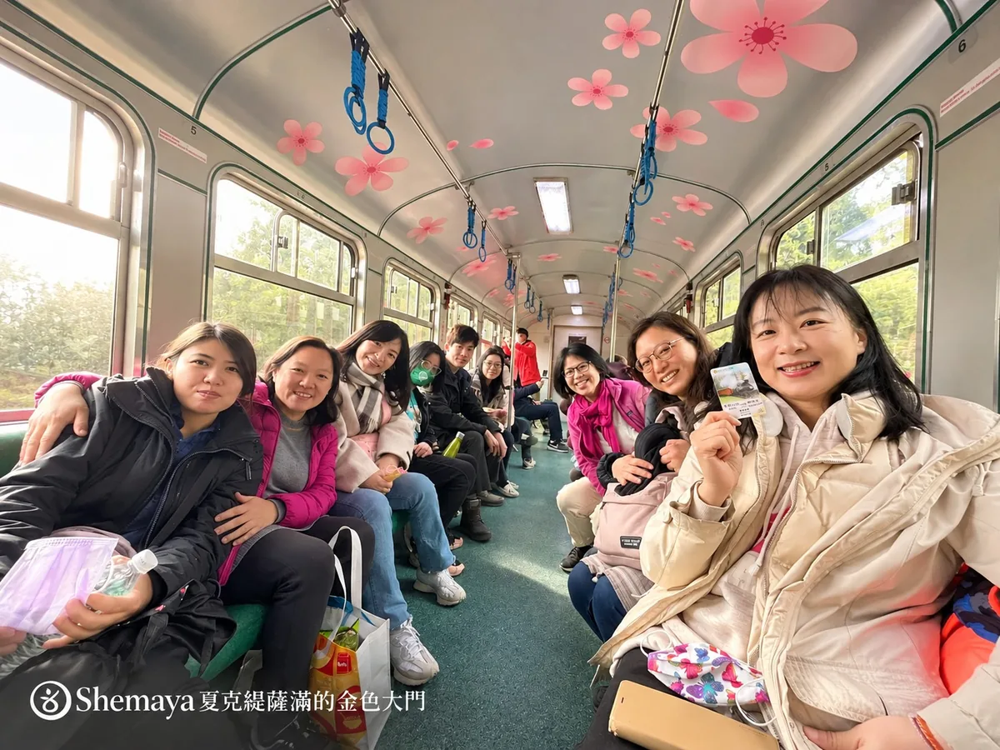
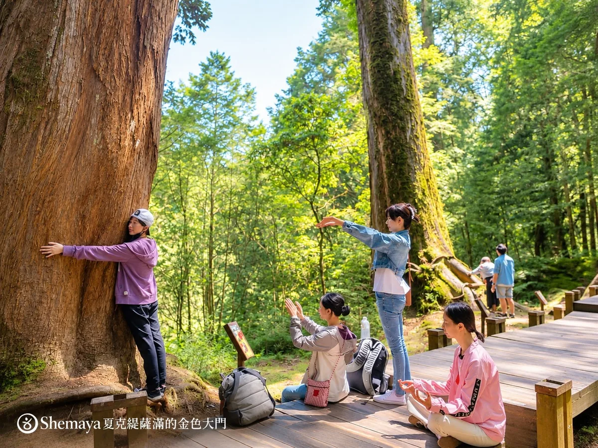
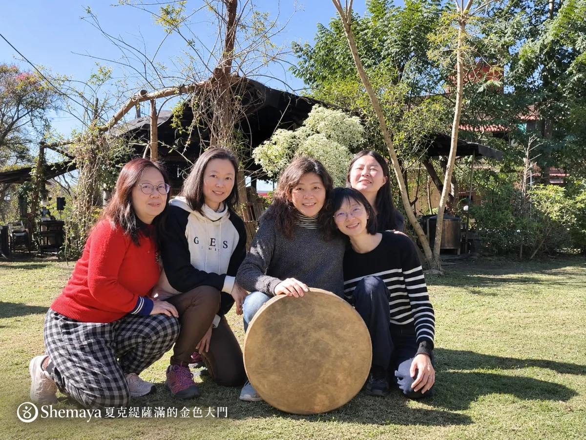
學員ＳＭ～突破愛自己的限制
隨著Shemaya 老師的薩滿鼓聲，我回到古老部落，彷彿是準備為愛出征的時刻。卡莉的黑光引領我察覺深藏後背與尾椎的古老創傷。夜晚時分，老師升起寬恕火典及黑光療癒，帶我走得更深-從後心輪、心輪剝洋蔥似的，一層層往深處挖掘，背後深處的痛點持續浮出，那是過去世身為薩滿時未療癒的陰影。療癒到尾椎，配合「我是…及我是」的話語，突然間我情緒湧上，哭得很慘的我，釋放了從小一直期待自己成為什麼樣或是像別人一樣，那個不接受自己原本模樣的自己。
從老師手上接到我的天賦「耶穌之愛的玫瑰」後，我仍無法與耶穌連結，老師帶我頂禮後，心鬆了，情緒卻上來哭得很傷心，老師便請我作「我愛我自己」，不知怎麼我就是說不出口！突然想到在學習或在工作上，我總是嚴格要求自己要完美、要做到最好、要一百分，否則就是失敗，總是責備、批判著自己。謝謝老師的溫柔與耐心，給我足夠時間去釋放情緒。
當老師的薩滿鼓聲一響起，原本還有拘束的，隨著越來越多的鼓聲流動讓我充滿力量～啊！那為所愛的族人、為愛出征般的力量，隨著我恣意旋轉、跳舞，我對山谷發出最深長的吶喊！原始的力量湧出！我釋放了身上枷鎖⋯隨興、奔放、流動⋯自由都回來了！忍不住我又向山谷仰天吶喊，釋放那女性的狂野！
回程等車時，我決定試試給出我的天賦禮物。這次我全然與耶穌連結，很開心成功了！薩滿鼓聲和舞動、爆發的野性⋯⋯著實幫助我好大！ 謝謝這次深入的薩滿內在旅程，兩次心的哭泣，釋放了好多長期不接受自己，對自己嚴苛的要求、批判情緒，以及那些古老的、被遺忘的陰影包袱。謝謝老師，謝謝來自大地母親、天狼星及印第安薩滿鼓聲的療癒力量，也謝謝大山讓我睡得很沉，身心都得到深度休息。（學員ＳＭ）
學員Ｈ
夜晚火典後，跟隨老師的薩滿鼓聲，我心中深處有股悸動讓我去跟大地連結，透過心的吟唱、舞蹈去重新憶起「我是誰！」隨風四起的狼嚎聲中，那長久在城市受限的我，喉輪終於被解放！
無論做什麼活動，我始終無法喚起心中那股深刻的熱情！而在山上的薩滿僻靜夜晚，我第一次清楚的聽到狼群的呼喚！心中有種感覺「這就是我！是我一直在做的事！」隨著Shemaya 老師帶領，我與大自然存有們連結時，我眼淚突然不停地流，沒料到祂們竟然會像我的老友重逢一樣，那麼熟悉、真實！我說：「回去好痛苦。」大自然存有們回應：「我們會在這一直等你」，我的淚水更像大雨止不住了！
老師的二天薩滿課程內容，使我感到離真實的自己更靠近，慢慢地拼出屬於我的靈魂拼圖，心很感動。每次上Shemaya老師的課，總讓我印象很深刻，尤其這次老師為大家取回個人的天賦禮物，我很快感知到自己的「薩滿力量錦帶」會根據身心不同狀況而量身變化。我很快就能得心應手，給出時像極了電影裡的魔法，當給出力量天賦時，我的心湧出的喜悅是前所未見的美好。（學員H)
學員Ｏ～突破喉輪的堵塞
我有許多累世留下的意識殼，讓我無法自在的放開在自己。看著大家吟唱 、開展舞動，在草原上翻滾 ⋯深深觸擊我，心覺得這真是很美的畫面。
在火典後老師帶大家在草地盡情吟唱、舞動身軀。也許是Shemaya老師看到我放不開，突然神來一筆的朝我擊鼓並對我的心嘶吼，頓時衝破了我內在某層卡住的枷鎖，這讓我的聲音由緩緩小聲的喊，轉變成能夠用生命去吶喊的強大力量！這一喊 ，也讓我咳出卡住許久的能量。我的聲音力量的共鳴打開了！連講話聲音都變得更加渾厚扎實。
還有難忘的能量泉彩蛋及同學們愛的協助，特別是老師以紅罌粟花花精去柔化我這個老戰士魂的下意識防備牆，頓時一股暖流湧入我胸口並向下流動，軟化我的心也讓我能感受到大家對我滿滿的關懷與愛。最後的神木之旅，躺在神木下的石板時，有股能量讓我的心酸酸的鬆動了。
離開前我深擁神木！我感謝大地！感謝神木，突然一股暖暖的愛回流湧上我的心 ，湧上後腦，流至整個背部。謝謝大山讓我帶著這份祝福，結束這美妙的靈性旅程。（學員Ｏ）
學員Ｄ
從來沒想過自己會踏入部落走薩滿旅程，以前認為很遙遠的事，此刻心卻這麼近。老師給出的純粹黑光，將我內心深層層陰影撥開，我也在夥伴交換療癒走一段旅程。有老師在旁協助，我順利給出自己的金光蓮花，這是收穫很多的夜晚。
早晨在山上大地上做譚崔蓮花瑜珈，令我想起前年做臍輪體位時，那時的我在現實生活完全沒有做自己的勇氣，做起臍輪幾乎無法撐住。這二年追隨Shemaya老師的帶領與學習，讓我跨越了不少自我設限，破除了舊思維及激發做自己的勇氣。這次我竟然在腳傷未癒下，完美地做到臍輪體位了！我嚐到自我挑戰所帶來成就感與欣喜。
老師幫我接下的是太陽的金火，能協助臣服及帶來和平的火。剛開始，我擺脫不了頭腦而無法掌握，在老師細心帶領下，終於我拋開頭腦的束縛，回到心與信任，使用掌中的火便越是順暢。我期許將自己光的禮物分享給更多人。隔天和家人上梅嶺，先生一直說路很陡，我卻無任何困難。那是因為我更落地，雙腳變很有力量的緣故。很期待未來再次踏上老師帶領的薩滿僻靜之旅。（學員Ｄ）
學員Ｆ
在薩滿原諒儀式時，我看到內心的內心認為自己不可能被接納，而這個陰影也造成我習慣性的隱避與退縮。當Shemaya 老師將天狼星金白光火典帶下來時，我的腿開始痛，突然記起老師說天狼星金白光火焰會掀起那些自己逃避已久、不願面對的議題，這火焰讓那些對當事人很重要，卻一直被忽略的議題浮出表面，能被看到然後被處理。所幸老師過來幫我療癒，腳很快恢復了。
老師教我們和大地母親連結，透過與最純淨的水和自然存有合作去療癒⋯這些使我生起奇特的熟悉感。只要信任自己、信任我的雙手允許能量自由流動即可。提供能量服務使我變得很有精神，完全不像在平日疲累的我。
在某段療癒時，老師打開手擁抱我說「再也不會有人因為你的力量去傷害你了」，我的眼淚倏然而下。老師便用她的藥草精華在我光體上療育，臍輪痛感後，我看見也去釋放掉過去生被火刑時受到的痛楚。在過去舊時代，我們的光不被允許自由展現，這也導致很多薩滿是隱密而不想被看見的。（學員Ｆ）
學員Ｓ～被大山召喚
謝謝Shemaya老師的阿里山僻靜工作坊，天狼星星光的療癒能量在阿里山上超支持的，讓我整個身心靈被充電飽飽。雖然一起上山都是陌生朋友，見面後卻像認識許久的族人般親切。才剛抵達山區，意外的，我感受到大山土地對我的召喚，不禁放聲大哭起來，Shemaya老師的擁抱真的很溫暖。後續同學們用各種方式來支持我，我都有感受被支持好感動。
這次我終於突破限制，能在這麼多人面前擊鼓吟唱，還一起瘋狂跳舞，真的好開心！好喜歡這三天在阿里山的所有人事物的發生，至今回想起來，我的心還留在阿里山不想回來啊， 我也開始期待老師下次的阿里山僻靜工作坊（學員Ｓ)
學員EN
謝謝 Shemaya老師一路上無微不至的照顧，旅程一開始就感受到滿滿的愛，還有很棒的同學交換療癒。老師把課程擴充成2天豐富的療癒，沒想到還有療癒池的彩蛋，實在充滿驚喜！ 老師直指核心的建議和療癒手法也受益良多。我們好棒喔，大家一路上合作無間。在見到神木們後，又被自然存有們充了滿滿的電，身心超舒展的。希望以後還能跟大家同行。（學員ＥＮ）
學員Ｎ～找回自己的聲音
圍繞著夜晚的火焰，Shemaya 老師雙手連結我和另一位同學去支持我們去跟自己的力量動物連結，並透過狼嚎呼喚祂們。一開始我很害羞不太想叫，但我聽到老師、同學在狼吼，我只好放開跟著嚎叫，越叫越大聲後其他人也開始隨著狼或其他動物的聲音，哇！放下所有矜持，我的心終於被打開了！心感到很快樂，很舒暢！
我的狼嚎叫來越大聲，還發出超響亮的OM。老師以能量指引我穿梭，我重重踱起右腳，呼喚我的狼群！以權威又霸氣的方式，啊嗚啊嗚的呼喚我的狼群！頓時我渾身充滿了力量！好舒爽、好滿足！我真的突破了喉輪的限制，也找回自己聲音及力量！真好！ （學員Ｎ)
（學員Ｔ）療癒原生家庭的缺憾
傍晚大家圍坐著，等待接收Shemaya天狼星給個人的療癒，我雙手越來越冰冷，想說可能傍晚氣溫下降索性把窗戶都關上，Shemaya笑問有這麼冷喔？Shemaya老師給我的是黑光鑽石! 我的雙手和身體竟然奇妙地暖和起來，她的能量是那麼柔和，像母親般擁抱的愛的品質！這是我第一次接受黑光，原來並不像頭腦想像的那樣直接或劇烈，Shemaya老師的黑光是充滿夏克緹的、如母親臨在的愛，能讓我穩妥被承接著。
接著Shemaya為我讀到的主題是原生家庭。我閉眼跟隨她的能量指引， 她以黑光帶我回到那合一中，完全跳脫頭腦意識的介入，毫無情緒評判，我只是觀看著！過往的創傷、自我對話、分離感⋯等頭腦的碎念在當下都不存在了！曾幾何時，我選擇停止給出愛，而就在此刻當下，我重新選擇愛。我再次從心給出愛送給家人，以及在天堂我摯愛的母親。透過這合一的圓圈，最後愛又再次回到我身上，哇！整個內在過程很平靜，完全抽離頭腦的侷限、超脫的，我經驗了美好的內在旅程。
躺在大地上仰望著天空好美的藍，內心好平靜、喜悅、好享受，好真實、好自在！我感受到原來大地母親的愛無所不在！兩天時間過得飛快，彷彿跟家人回家團聚般的自然、開心和自在，與其說參加課程，更像是久遠的靈魂邀約及重聚。我回到自己內在與自己的親密，頭腦是安靜的，這些很內在之旅，很難以用文字詳述這兩天內美好的發生。
感受到Shemaya老師內在的敞開，她帶著愛、勇氣迎向未知的心，有她一路持續的穿越學習及前進，才能讓每次的薩滿之旅順利開展。看著她拖著行李大包小包的上山，那肯定都是愛，才能去支持薩滿僻靜的準備。謝謝Shemaya老師一路支持陪伴。（學員Ｔ）
學員Ｂ
對薩滿印象停留在印地安、深山、儀式，既有點神祕又有點害怕，由於我很想去阿里山，加上有信任的Shemaya老師，所以就報名了。以往報靈性能量課程，課未開始前，我的人生議題會先行浮現，雖習慣這樣的能量預備模式，但前往嘉義火車上我還是流下了淚。在Shemaya 老師設置那美到不行的天狼星金白光焰曼達拉後，她又為我的眉心輪釋放掉已滿到爆炸的思緒，讓我靜下來好好感受。最接近我印象中的薩滿，應該是晚上火典及火薩滿儀式吧！
大家圍著火，老師擊起薩滿鼓，我心想這跟電視裡一樣啊！沒想到更精彩的在後—Shemaya 老師連結同學形成狼族三人組，一起仰天長嘯地～～狼嚎！其他人漸漸也被狼群的能量帶動，開始狼嚎起來！狼嚎強化了我喉輪的力量，突然我喉嚨有股能量要衝出來，超想罵出那些卡在喉嚨的陳年壓抑的聲音！於是我大聲吼，吼出了我人生中最大聲的話！呼！真是好暢快！管它有點小丟臉，這可打開了我原本堵塞的喉輪呀！ 經過這次的大釋放，回到日常生活後我的表達更流暢了。
Shemaya 老師的黃金世紀薩滿僻靜課程內容實在太豐富！二天一夜很快就過了。這次的課程完全更新我對薩滿的既有印象！
我了解到薩滿是禮敬大地母親、回到與萬物合一的愛中，大地媽媽的愛有著各式各樣的豐盛之愛，精彩無比。（學員Ｂ）